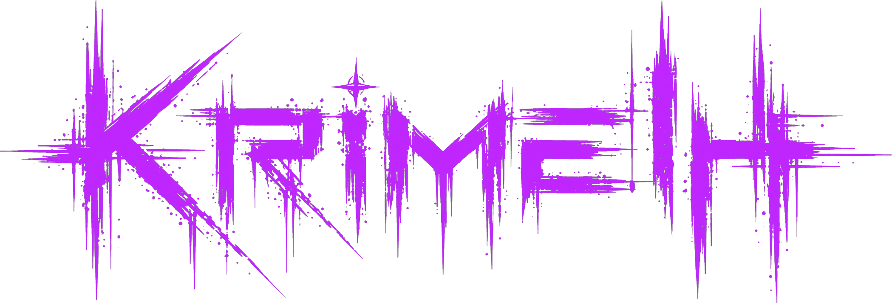

<meta charset="UTF-8">
<title>Puerta II · Ruin</title>
<style>
  :root{
    --ink:#050506;
    --cream:#efe7da;
    --cream-dim:#efe7da8f;
    --violet:#c026ff;
    --acid:#39ff8f;
    --blood:#ff1744;
    --rule:#efe7da22;
  }
  *{box-sizing:border-box;}
  html{scroll-behavior:smooth;}
  body{
    margin:0;
    background:var(--ink);
    color:var(--cream);
    font-family:'Space Mono',ui-monospace,monospace;
    -webkit-font-smoothing:antialiased;
  }
  a{color:inherit;}
  [hidden]{display:none !important;}

  /* ---- top bar ---- */
  header.bar{
    position:sticky; top:env(safe-area-inset-top,0px);
    z-index:60;
    display:flex; align-items:center; justify-content:space-between;
    gap:12px;
    padding:16px 22px;
    background:rgba(5,5,6,0.86);
    backdrop-filter:blur(6px);
    border-bottom:1px solid var(--rule);
  }
  .bar .home{
    font-family:'Dancing Script','Cinzel',cursive;
    font-weight:700;
    font-size:22px;
    letter-spacing:.02em;
    text-decoration:none;
  }
  .bar .back{
    font-size:10px;
    letter-spacing:.16em;
    text-transform:uppercase;
    color:var(--cream-dim);
    text-decoration:none;
    border:1px solid var(--rule);
    padding:8px 12px;
  }
  .bar .back:hover{color:var(--ink); background:var(--cream); border-color:var(--cream);}

  /* ---- door intro ---- */
  .door-intro{
    max-width:720px;
    margin:0 auto;
    padding:56px 22px 30px;
    text-align:center;
  }
  .door-intro .kicker{
    font-size:11px; letter-spacing:.32em; text-transform:uppercase;
    color:var(--cream-dim); margin:0 0 14px;
  }
  .door-intro h1{
    font-family:'Dancing Script','Cinzel',cursive;
    font-weight:700;
    font-size:clamp(30px,7vw,48px);
    letter-spacing:.04em;
    margin:0 0 10px;
  }
  .door-intro p{
    color:var(--cream-dim);
    font-size:13px;
    line-height:1.7;
    max-width:52ch;
    margin:0 auto;
  }

  /* ---- toggle ---- */
  .switcher{
    position:sticky;
    top:calc(58px + env(safe-area-inset-top,0px));
    z-index:55;
    display:flex;
    max-width:640px;
    margin:0 auto 0;
    padding:0 22px;
  }
  .switcher-track{
    display:flex;
    width:100%;
    border:1px solid var(--rule);
    background:#0a0a0c;
  }
  .switcher button{
    flex:1;
    appearance:none;
    background:transparent;
    border:none;
    color:var(--cream-dim);
    font-family:'Space Mono',monospace;
    font-size:11px;
    letter-spacing:.2em;
    text-transform:uppercase;
    padding:14px 10px;
    cursor:pointer;
    transition:background .25s ease, color .25s ease;
  }
  .switcher button.active.side-dark{background:var(--blood); color:#0a0505;}
  .switcher button.active.side-light{background:var(--violet); color:#0a0510;}
  .switcher button:not(.active):hover{color:var(--cream);}

  /* ---- panel shell ---- */
  .panel{
    border-top:1px solid var(--rule);
    border-bottom:1px solid var(--rule);
  }

  /* the photo lives in its own fixed-height hero, so it's always fully visible
     regardless of how long the lyrics/text below it run */
  .hero{
    position:relative;
    overflow:hidden;
    height:78vh;
    min-height:460px;
    max-height:680px;
    display:flex;
    align-items:flex-end;
  }
  .panel-bg{
    position:absolute; inset:0;
    background-size:cover;
    background-position:50% 28%;
    animation:kenburns 26s ease-in-out infinite alternate;
  }
  @keyframes kenburns{
    0%{transform:scale(1) translate(0,0);}
    100%{transform:scale(1.12) translate(-1.5%,-1%);}
  }
  .panel-scrim{
    position:absolute; inset:0;
  }
  .side-dark .panel-scrim{
    background:
      linear-gradient(180deg, rgba(5,5,6,.06) 0%, rgba(5,5,6,.14) 46%, rgba(5,5,6,.68) 78%, rgba(5,5,6,.94) 100%),
      radial-gradient(ellipse at 50% 20%, rgba(255,23,68,.16), transparent 60%);
  }
  .side-light .panel-scrim{
    background:
      linear-gradient(180deg, rgba(5,5,6,.06) 0%, rgba(5,5,6,.14) 46%, rgba(5,5,6,.66) 78%, rgba(5,5,6,.94) 100%),
      radial-gradient(ellipse at 50% 20%, rgba(192,38,255,.14), transparent 60%);
  }

  /* floating icon accents */
  .icon-field{
    position:absolute; inset:0;
    pointer-events:none;
    z-index:2;
  }
  .icon-field svg{
    position:absolute;
    opacity:.5;
  }
  .side-dark .icon-field svg{ color:var(--blood); animation:floatSlow 9s ease-in-out infinite; }
  .side-light .icon-field svg{ color:var(--violet); animation:floatSlow 11s ease-in-out infinite; }
  @keyframes floatSlow{
    0%,100%{ transform:translateY(0) rotate(0deg); }
    50%{ transform:translateY(-14px) rotate(6deg); }
  }

  .hero-content{
    position:relative; z-index:3;
    width:100%;
    max-width:760px;
    margin:0 auto;
    padding:22px 22px 30px;
    text-align:center;
  }
  .hero-content .track-kicker{
    font-size:11px; letter-spacing:.3em; text-transform:uppercase;
    margin:0 0 12px;
  }
  .side-dark .track-kicker{color:var(--blood);}
  .side-light .track-kicker{color:var(--violet);}
  .wordmark{
    display:block;
    height:clamp(30px,7vw,46px);
    width:auto;
    margin:0 auto 18px;
  }
  .hero-content h2{
    font-family:'Dancing Script','Cinzel',cursive;
    font-weight:700;
    font-size:clamp(38px,9vw,64px);
    letter-spacing:.02em;
    margin:0 0 8px;
    text-shadow:0 2px 18px rgba(0,0,0,.65);
  }
  .hero-content .subtitle{
    font-size:12px;
    letter-spacing:.14em;
    text-transform:uppercase;
    color:var(--cream-dim);
    margin:0;
    text-shadow:0 2px 12px rgba(0,0,0,.7);
  }

  .panel-content{
    position:relative;
    max-width:760px;
    margin:0 auto;
    padding:40px 22px 70px;
    text-align:center;
    background:var(--ink);
  }
  .panel-content .note{
    font-size:13px;
    line-height:1.8;
    color:var(--cream-dim);
    max-width:56ch;
    margin:0 auto 34px;
  }

  /* ---- lyrics ---- */
  .lyrics{
    text-align:left;
    max-width:620px;
    margin:0 auto;
    padding:26px 26px 30px;
    background:rgba(5,5,6,0.55);
    border:1px solid var(--rule);
    backdrop-filter:blur(2px);
  }
  .lyrics h3{
    margin:0 0 16px;
    font-size:10px;
    letter-spacing:.28em;
    text-transform:uppercase;
    color:var(--cream-dim);
  }
  .lyrics pre{
    margin:0;
    font-family:'Space Mono',monospace;
    font-size:13px;
    line-height:1.85;
    color:var(--cream);
    white-space:pre-wrap;
    word-break:break-word;
  }

  /* ---- about the song ---- */
  .about-song{
    text-align:left;
    max-width:620px;
    margin:26px auto 0;
    padding:26px 26px 28px;
    border:1px dashed var(--rule);
  }
  .about-song h3{
    margin:0 0 14px;
    font-size:10px;
    letter-spacing:.28em;
    text-transform:uppercase;
    color:var(--cream-dim);
  }
  .about-song p{
    margin:0 0 14px;
    font-size:13px;
    line-height:1.85;
    color:var(--cream-dim);
  }
  .about-song p:last-child{ margin-bottom:0; }

  footer.credit{
    padding:36px 22px calc(36px + env(safe-area-inset-bottom,0px));
    text-align:center;
    font-size:9px;
    letter-spacing:.2em;
    text-transform:uppercase;
    color:#efe7da55;
  }
  footer.credit a{text-decoration:none; color:var(--cream-dim);}

  @media (max-width:560px){
    .switcher{top:calc(54px + env(safe-area-inset-top,0px));}
    .panel-content{padding:48px 18px 54px;}
    .lyrics{padding:20px 18px 24px;}
  }
</style>

<link rel="preconnect" href="https://fonts.googleapis.com">
<link rel="preconnect" href="https://fonts.gstatic.com" crossorigin>
<link href="https://fonts.googleapis.com/css2?family=Dancing+Script:wght@600;700&family=Cinzel:wght@500;600&family=Space+Mono:wght@400;700&display=swap" rel="stylesheet">

<header class="bar">
  <a class="home" href="index.html">Krimelh</a>
  <a class="back" href="reveal.html">&larr; las 7 puertas</a>
</header>

<section class="door-intro">
  <p class="kicker">Puerta II / VII · Ruin</p>
  <h1>Destrucción</h1>
  <p>Otro lado, misma esencia. La misma canción no existe: hay una versión que se rompe hacia adentro y una que se rompe hacia afuera. Elegí un lado.</p>
</section>

<nav class="switcher" aria-label="elegir versión">
  <div class="switcher-track">
    <button type="button" id="btn-dark" class="active side-dark" aria-pressed="true">Hlemirk &middot; Dividirse duele m&aacute;s</button>
    <button type="button" id="btn-light" class="side-light" aria-pressed="false">Krimelh &middot; Krick</button>
  </div>
</nav>

<!-- ============ DARK SIDE — HLEMIRK / DIVIDIRSE DUELE MÁS ============ -->
<article class="panel side-dark" id="panel-dark">
  <div class="hero">
    <div class="panel-bg" style="background-image:url('assets/hlemirk-cover.jpg');"></div>
    <div class="panel-scrim"></div>
    <div class="icon-field" id="icons-dark"></div>
    <div class="hero-content">
      
      <p class="track-kicker">otro lado</p>
      <h2>Dividirse duele m&aacute;s</h2>
      <p class="subtitle">Sencillo 1</p>
    </div>
  </div>
  <div class="panel-content">
    <p class="note">La misma grieta, pero puertas afuera: una mirada que se va a otro lado, una pista de baile, todo el mundo disimulando al mismo tiempo.</p>

    <div class="lyrics">
      <h3>Letra</h3>
      <pre>[Verso 1]
El amor era sencillo
hasta que te vi mirarla
una mano en mi cintura
y tus ojos... no me hallan
Yo quería un solo fuego
pero llegó él también
con los ojos que me piden
lo que yo no quiero ver

[Pre-Coro]
Y mientras tú miras lejos
con la copa entre las manos
yo evado otra mirada
que me quema desde el lado
El aire está pesado
nadie dice la verdad
y en la pista disimulo
lo que no puedo evitar

[Coro]
Dividirse duele más
dividirse duele más
si tu vista está en otra
y la mía en alguien más
Dividirse duele más
dividirse duele más
el corazón no sabe
cómo estar en dos a la vez

[Verso 2]
Tú te acercas y te alejas
como ola contra el muelle
y él me mira con deseo
yo le finjo que no duele
Tú le ofreces otra noche
yo le esquivo la verdad
porque hay fuegos que se cuidan
solo con no mirar más

[Pre-Coro]
Mientras tú miras lejos
con la copa entre las manos
él insiste en la mirada
y yo finjo que no ha pasado
El aire está pesado
nadie dice la verdad
y aunque yo disimule
el cuerpo sí dice la verdad

[Coro]
Dividirse duele más
dividirse duele más
si tu vista está en otra
y la mía en él también
Dividirse duele más
dividirse duele más
el corazón no sabe
cómo estar en dos a la vez

[Puente]
Si me dices qué elegiste
yo me voy sin hacer ruido
pero no me pidas calma
cuando tú ya has dividido
Yo no soy mitad de nadie
ni el secreto de un rincón
si me quieres, ven de frente
que yo apago esta canción

[Coro final]
Dividirse duele más
dividirse duele más
si tu vista está en otra
y la mía en alguien más
Dividirse duele más
dividirse duele más
el corazón no sabe
cómo estar en dos a la vez</pre>
    </div>
  </div>
</article>

<!-- ============ LIGHT SIDE — KRIMELH / KRICK ============ -->
<article class="panel side-light" id="panel-light" hidden>
  <div class="hero">
    <div class="panel-bg" style="background-image:url('assets/krimelh-portrait-2.jpg');"></div>
    <div class="panel-scrim"></div>
    <div class="icon-field" id="icons-light"></div>
    <div class="hero-content">
      
      <p class="track-kicker">lo que el mundo ve</p>
      <h2>Krick</h2>
      <p class="subtitle">Crick / Overwind &middot; sencillo 1</p>
    </div>
  </div>
  <div class="panel-content">
    <p class="note">La cuerda que se aprieta sola. Autosabotaje al ritmo de un reloj que no perdona — la primera grieta, antes de que existiera un nombre para todo esto.</p>

    <div class="lyrics">
      <h3>Letra</h3>
      <pre>no me des cuerda ...

(verso 1)
fallo siempre — cada tiro en falso
mal armada desde antes de arrancar
cable pelado — el subte me colgó de nuevo
cada idea que agarro se me va en delay
hablo a oscuras pero sueno trucha
soy un error que nadie va a reparar
levanto todo para verlo caer me estorba
mi deporte es cagármela yo sola

(pre)
crick crick crick— al cinturón
crick crick crick— acá en el pecho
crick crick crick— a cada pensamiento
no me doy tregua, no
apretada — una vuelta más profundo
si me apretás otro segundo
mi cerebro va a expulsarme del mundo

(coro)
balas listas — igual me muero
otra versión mía que tiré al basurero
todos son los Beatles de nuevo
yo soy ruido que no encuentra momento
todas se van a ir al piso
en cualquier momento el vaso se hace trizas
de vivir siempre al borde de la llama
soy el arma y el blanco — misma cama

(hook)
crick crick — dale cuerda
crick crick — no pares
crick crick — reventá el reloj
soy el candado que se traba a sí mismo
crick crick — apretá el tornillo
crick crick — partime al medio
crick crick — ya lo viví
rompo todo lo que toco — siempre, feel me

(verso 2)
me visto bien — el odio va de salida
todo prolijo afuera, adentro es un glitch
sonrío bien — pero it's counterfeit
cada cosa que logro / la borro /dismiss
veo la luz — y apago el switch sola
como si doler fuera lo que yo merezco
si algo empieza a sentirse bien de verdad
lo arruino antes — just in case, ¿viste?

(pre 2)
crick — en la sangre
crick — hasta durmiendo
crick — repito
cada cagada que metí
apretada — me corta el aire
apretada — sentí el chirrido
la cabeza es un reloj
que me quiere moler viva

(coro 2)
balas listas — igual me muero
otra versión mía que tiré al basurero
todos son los Beatles ahora
todos brillan… yo me voy extinguiendo
todas se van a ir al piso
HOY todas VIS-ten de caLIP-so —
yo no sin-cro-NI-zo
algunas saben zafar y otras ajustarse más
yo me quedo en el modo de siempre
saboteándome antes de empezar

(bridge)
y si paro…?
…ni ahí
con toda esa cuerda que di…
cada ajuste me hace más violenta
cada vuelta reajusta la secuencia
si no es perfecto no lo vendo
me exijo tanto - me autoflagelo

(outro)
crick… crick… crick…</pre>
    </div>

    <div class="about-song">
      <h3>Sobre la canción</h3>
      <p>Escrib&iacute; Crick en una &eacute;poca en la que no pod&iacute;a terminar nada sin arruinarlo primero. Notaba el patr&oacute;n y no lograba pararlo: apenas algo empezaba a salir bien, yo misma le buscaba la grieta. Necesitaba ponerle un sonido a esa sensaci&oacute;n &mdash; el de algo que se aprieta de m&aacute;s, una cuerda, un tornillo, justo antes del punto de quiebre. Ese es el crick.</p>
      <p>No es una m&aacute;quina. Soy yo ajust&aacute;ndome a m&iacute; misma como si fuera una pieza que nunca alcanza &mdash; corrigi&eacute;ndome, control&aacute;ndome, castig&aacute;ndome por no ser perfecta. La canci&oacute;n no tiene soluci&oacute;n ni final feliz porque en ese momento tampoco lo ten&iacute;a yo.</p>
      <p>Y termin&oacute; pas&aacute;ndome lo mismo que cuento en la letra: sola, nunca iba a estar lista. Pod&iacute;a seguir ajustando para siempre y no terminarla nunca. Por eso fui a un estudio &mdash; dej&eacute; de hacerlo todo sola, dej&eacute; que otra persona pusiera el freno que yo no sab&iacute;a ponerme. A mi manera, esto no se iba a terminar jam&aacute;s.</p>
    </div>
  </div>
</article>

<footer class="credit">Otro lado &middot; misma esencia &middot; <a href="reveal.html">volver a las puertas</a></footer>

<script>
  (function(){
    var btnDark = document.getElementById('btn-dark');
    var btnLight = document.getElementById('btn-light');
    var panelDark = document.getElementById('panel-dark');
    var panelLight = document.getElementById('panel-light');

    function showDark(){
      panelDark.hidden = false;
      panelLight.hidden = true;
      btnDark.classList.add('active');
      btnLight.classList.remove('active');
      btnDark.setAttribute('aria-pressed','true');
      btnLight.setAttribute('aria-pressed','false');
    }
    function showLight(){
      panelLight.hidden = false;
      panelDark.hidden = true;
      btnLight.classList.add('active');
      btnDark.classList.remove('active');
      btnLight.setAttribute('aria-pressed','true');
      btnDark.setAttribute('aria-pressed','false');
    }
    btnDark.addEventListener('click', showDark);
    btnLight.addEventListener('click', showLight);

    // scatter small floating glyphs — biohazard mark (Hlemirk) / spark (Krimelh)
    var biohazard = '<svg viewBox="0 0 24 24" width="26" height="26" fill="none" stroke="currentColor" stroke-width="1.4"><circle cx="12" cy="12" r="2.1"/><path d="M12 9.9V4M14.3 13.2l4.8-2.8M9.7 13.2l-4.8-2.8M13 14.9l2.4 4.9M11 14.9l-2.4 4.9"/><circle cx="12" cy="4.6" r="1.6"/><circle cx="19.8" cy="10" r="1.6"/><circle cx="4.2" cy="10" r="1.6"/><circle cx="16.2" cy="19" r="1.6"/><circle cx="7.8" cy="19" r="1.6"/></svg>';
    var spark = '<svg viewBox="0 0 24 24" width="22" height="22" fill="currentColor"><path d="M12 2l1.8 6.6L20 10l-6.2 1.4L12 18l-1.8-6.6L4 10l6.2-1.4z"/></svg>';

    function scatter(hostId, glyph, count){
      var host = document.getElementById(hostId);
      if(!host) return;
      for(var i=0;i<count;i++){
        var wrap = document.createElement('div');
        wrap.innerHTML = glyph;
        var el = wrap.firstElementChild;
        el.style.left = (5 + Math.random()*88) + '%';
        el.style.top = (8 + Math.random()*78) + '%';
        el.style.animationDelay = (Math.random()*6).toFixed(2) + 's';
        el.style.animationDuration = (7 + Math.random()*5).toFixed(2) + 's';
        host.appendChild(el);
      }
    }
    scatter('icons-dark', biohazard, 5);
    scatter('icons-light', spark, 6);
  })();
</script>
